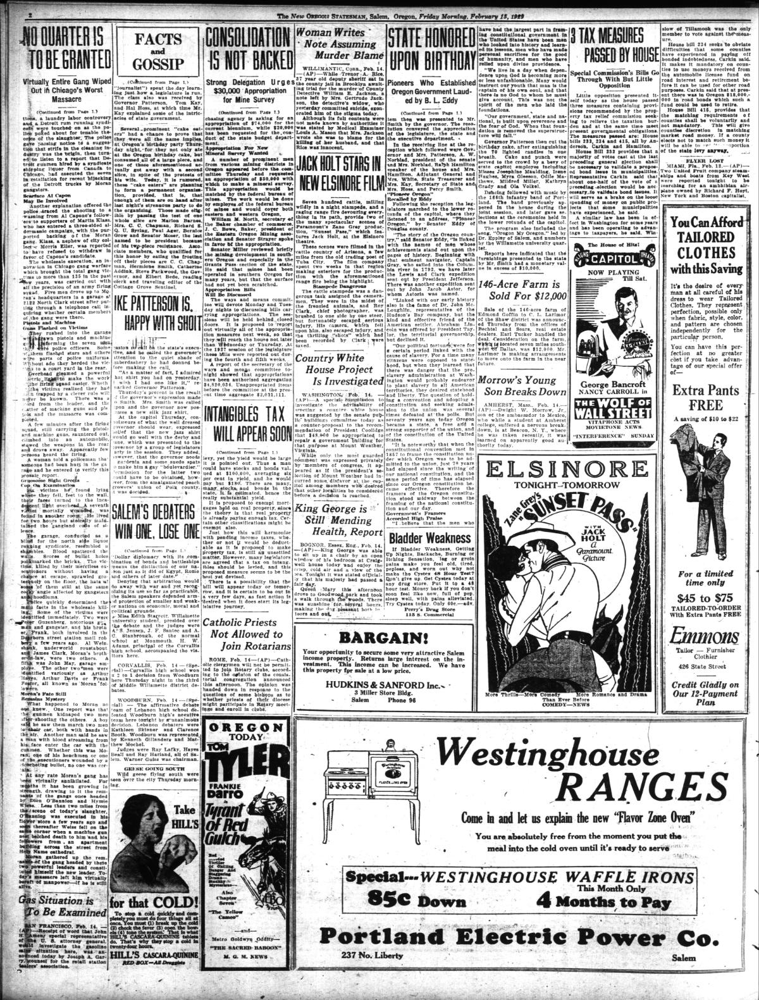

HN HN-463 · February 25, 1929 · Crime, Law & Justice > Organized Crime & Criminal Networks > Gangs
Source: Indianapolis Times, p. 11 — original page.
Report: Under the headline “Trail Turns to Al Capone in Massacre,†the newspaper said Chicago police were increasingly considering associates of Al Capone as perpetrators of the February 14 murders, while acknowledging few solid new developments.
Assessment: Police suspicion is not a finding of guilt. The newspaper's language is explicitly tentative, so the seven deaths can be recorded as fact without presenting Capone's personal direction of the massacre as proved by this article. See
Identity-review candidate peers: HN-462:Algorithmic
Authentic scans retrieved from Historic Oregon Newspapers (University of Oregon). Article crops are located using the archive's own OCR word coordinates and rendered at native crop resolution; page scans are reduced-size access renditions. No images were generated, mocked, or retouched.

Not yet acquired. Queued for provider-specific acquisition testing (see source-acquisition manifest).
URL (preserved verbatim): https://newspapers.library.in.gov/?a=d&d=IPT19290225.1.11
Saved research report: Historical_Newspaper_Event_Research_453-477_2026-10-23.md
Evidence note: A newspaper report means a historical publication made a claim; it does not establish that claim as fact. Contemporary reporting is separated from later scholarly context and our own assessment.